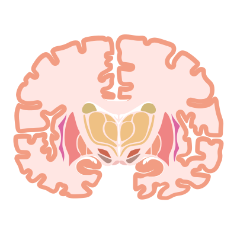

How does memory actually work?
A memory isn't a recording filed away in a drawer. It's a physical change in your neurons, and your brain rebuilds it every time you remember. Here's what that actually means.

Think about a specific moment from your childhood. A birthday, a fight, the smell of a particular kitchen. It feels like you're opening a file and watching it play back, as if the memory were sitting somewhere in your head, complete, waiting to be retrieved.
That picture is wrong in almost every way that matters. A memory isn't a recording, it isn't stored in any one place, and the act of remembering changes the thing you're remembering. To see why, it helps to build the idea up from the cell, the same way we did with the neuron.
Memory isn't one thing
The first mistake is treating memory as a single system. It isn't. The brain keeps several different kinds of memory that run on different machinery, and they can fail independently of each other.
There's working memory, the handful of things you can hold in mind right now, like a phone number you're about to dial. It lasts seconds and famously holds only about four to seven items at once. Then there's long term memory, which splits into two broad families. Declarative memory is the stuff you can consciously describe, and it divides again into episodic memory, the specific events you lived through, like your last birthday, and semantic memory, the facts you simply know, like the capital of France, stripped of any memory of learning them. Nondeclarative memory is everything you know how to do without being able to put it into words, like riding a bike, touch typing, or flinching at a sound that once came right before something painful.
These aren't just tidy philosophical categories. They come apart in real brains. The most famous demonstration came from a patient known for decades only by his initials, H.M.
The man who couldn't form new memories
In 1953, a man named Henry Molaison had large parts of his medial temporal lobes, including most of a seahorse shaped structure called the hippocampus, surgically removed to treat severe epilepsy. The seizures got better. But something nobody expected happened too. He could no longer form new conscious memories.
H.M. could hold a thought for as long as he kept rehearsing it, and his memories from well before the surgery were largely intact. But the moment his attention moved on, anything new was gone. He'd read the same magazine with fresh interest, and meet the same doctor as a stranger again and again, for the rest of his life.
Two things about H.M. reshaped the science of memory. First, it showed that the hippocampus is required to form new declarative memories but not to hold the old ones, which means making a memory and keeping a memory are different jobs done in different places. Second, and stranger, H.M. could still learn new motor skills. Asked to trace a shape while watching only his hand in a mirror, a genuinely hard task, he got better at it day after day, even though he had no memory of ever having done it before. His skill memory kept working while his memory for events was gone. Two kinds of memory, two separate systems, cleanly pulled apart in one person.
Where a memory actually lives
So if a memory isn't a file, what's it physically?
The leading answer is that a memory is a change in the connections between neurons. Remember that neurons talk to each other across synapses. The strength of a synapse, how hard the firing of one neuron pushes on the next, isn't fixed. It can go up or down with experience. This adjustability is called synaptic plasticity, and it's the closest thing neuroscience has to a physical home for memory.
The psychologist Donald Hebb captured the intuition back in 1949, in a line now usually squeezed down to four words, neurons that fire together wire together. If two connected neurons are active at the same time, the synapse between them strengthens, so that later one is more likely to set off the other. Wire enough of those small changes together across a population of cells and you've stored a relationship, a pairing, a pattern. You've remembered something.
In 1973 two researchers, Tim Bliss and Terje Lomo, found a concrete version of this in the rabbit hippocampus. A brief, rapid burst of stimulation to a pathway made its synapses respond more strongly for hours, even days, afterward. They called it long term potentiation, or LTP, and it's still the best studied cellular model of how a memory might get written. The molecular details that follow, a receptor called NMDA acting as a kind of coincidence detector, the trafficking of other receptors that makes a synapse physically stronger, the growth of new connection points on the dendrites, all fill in how a fleeting flash of activity becomes a lasting structural change. One honest caveat is worth stating up front. Almost all of this mechanism is worked out in animals and in slices of brain tissue, because you can't do these experiments in a living human. LTP is a powerful model, not a finished proof of how your own memories are stored.
The engram, and reading a memory off the cells
If a memory is a pattern of strengthened connections, can you find it? Can you point to the exact cells that hold one specific memory?
For most of the twentieth century this looked like a fool's errand. The psychologist Karl Lashley spent some thirty years training rats and then lesioning their brains, trying to locate the physical trace of a memory, which he called the engram, and he famously failed to find it in any single spot. Memory seemed to be everywhere and nowhere at once.
That has changed. Modern tools let researchers tag the specific neurons that switch on while a mouse forms a particular memory, and then turn just those neurons back on later using pulses of light, a technique called optogenetics. When they do, the mouse acts as though it's recalling the memory, freezing in fear, for instance, even in a place where nothing bad ever happened to it. Switch the tagged cells on, the memory appears. Silence them, and recall is blocked. The same light-based switch has since been used to drive whole behaviors, in one striking case making a mouse attack on cue. This is strong evidence that a given memory really is carried by a specific, sparse set of neurons, an engram, rather than smeared evenly across the whole brain. It's worth saying plainly that this work is done in mice, with methods that can't be used in people, and that being able to trigger a memory isn't the same as being able to read what's inside it. We can flip the switch. We can't yet play back the movie.
Remembering rewrites the memory
Here's the part that does the most damage to the filing cabinet picture. Pulling up a memory isn't a read only operation. It can change the file.
When a long term memory is recalled, it can briefly become unstable again, open to editing, before it's saved back down. This is called reconsolidation, and it was shown cleanly in 2000 by Karim Nader and his colleagues, who found that a settled fear memory in rats could be weakened if you interfered with the brain's protein building machinery at the exact moment the animal was recalling it. The memory had to be physically rewritten in order to last, and if you blocked the rewriting, it faded.
The human side of this is roughly fifty years of experiments on false memory, much of it by Elizabeth Loftus. People can be led, through nothing more than the wording of a question, to confidently remember details that never happened, sometimes whole events. In one classic study, simply asking how fast two cars were going when they smashed into each other, rather than when they hit each other, led people to recall broken glass at a scene that had none. Memory is reconstructive. Every time you remember, you rebuild the event out of fragments, and the version you rebuild is colored by your current mood, your beliefs, and the way the question was put to you. This isn't a flaw in a few unreliable people. It's how memory works in everyone, and it's a central reason a confident eyewitness can still be wrong.
You don't have to take my word for it. Here's that same reconstruction happening in your own head, in about a minute.
The honest caveats
As with the neuron, it's worth being clear about the edges of this story.
We don't have a full physical readout of a single human memory. We have a strong cellular model in synaptic plasticity, a clear anatomy for forming new declarative memories in the hippocampus that hands off to the cortex over time, a process that sleep seems to help along, and striking demonstrations in animals that memories map onto specific cells. What we don't have is the ability to look at a living human brain and say, there, those synapses, that's your tenth birthday. The distance between the molecular story and the felt experience of remembering is still wide.
Much of the sharpest mechanistic work is done in rodents, for the simple reason that you can't ethically do it in people, so every jump from a mouse to a human carries an asterisk. And the deepest question, how a pattern of strengthened synapses turns into the conscious experience of reliving a moment, is the same unsolved problem we ran into with the neuron. We know memory is physical. We can't yet say how the physics becomes the feeling.
We know memory is physical. We can't yet say how the physics becomes the feeling.
Why this matters
Getting this right quietly changes how you think about ordinary things.
It reframes learning. If a memory is the strengthening of connections through repeated, active firing, then cramming once is close to the worst way to study, and spreading practice out over time while forcing yourself to actively recall, rather than just rereading, is close to the best. The structure of memory is itself an argument for how to learn.
It reframes disease. Alzheimer's is, at the cellular level, a disease of synapses and the neurons that carry them, which is part of why it so often takes recent declarative memory first while leaving old skills alone. It reframes trauma, where the discovery that memories can be made briefly editable on recall has opened real, if still early, lines of treatment for conditions like PTSD.
And it reframes how much to trust your own certainty. A vivid, confident memory feels like proof. What it actually is, is the most recent rebuild of a structure that was never a recording in the first place. That's worth knowing about the three pounds of tissue you do all of your remembering with.